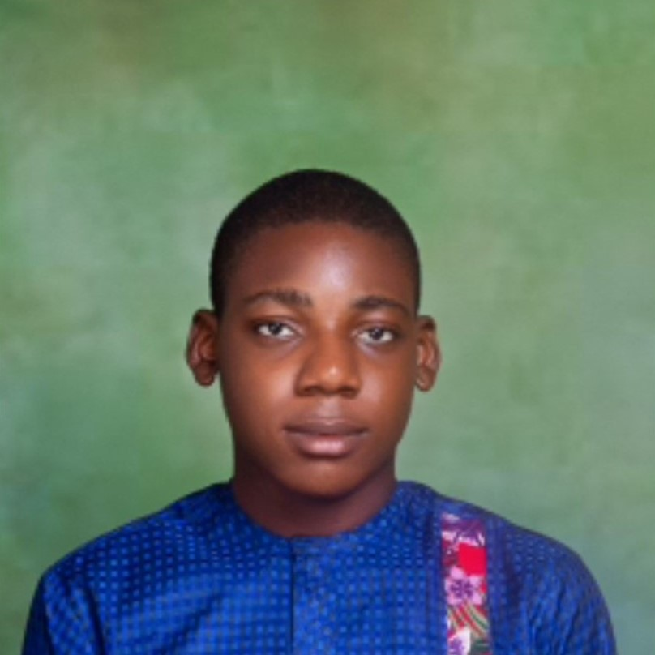

Challenges
Facing and overcoming challenges has been a significant part of my journey.
Time Management
Balancing the intensive coursework with other commitments required exceptional time management skills. I had to prioritize tasks, set realistic goals, and create a structured schedule to ensure I stayed on track. This experience has taught me the importance of discipline and effective planning.
Technical Difficulties
Encountering technical issues was inevitable. From debugging code to understanding complex concepts, each challenge pushed me to think critically and seek solutions. The support from my mentors and peers was invaluable in overcoming these hurdles, and each resolved issue boosted my confidence and knowledge.
Balancing Work and Study
Juggling work responsibilities and intensive study sessions was a significant challenge. It required a lot of dedication and resilience. I learned to manage my time efficiently, ensuring that I could meet deadlines for both work and coursework without compromising on quality.
Adapting to New Technologies
The fast-paced nature of the tech industry means constantly adapting to new tools and technologies. This was both exciting and challenging. Staying updated with the latest trends and continuously learning new skills was essential to keep up with the course requirements and industry standards.
Maintaining Motivation
There were times when the workload felt overwhelming, and maintaining motivation was tough. Setting small, achievable goals and celebrating each milestone helped me stay focused and motivated. The encouragement from my peers and mentors also played a crucial role in keeping my spirits high.